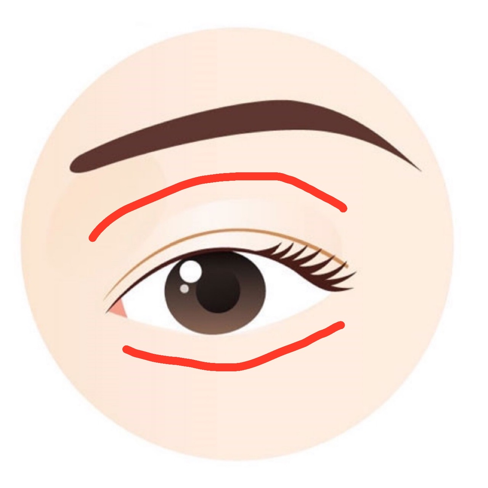

탈출! 거북목
신체 : 눈
시간 : 2분 10초
|  | 1. 1세트 | 30초1. 검지와 중지를 이용해 눈과 눈 주위 뼈대를 지그시 눌러준다. 2. 관자놀이를 시작으로 눈써의 바캍부터 안쪽으로 순서대로 눌러준다. |
2. 3세트 | 10초코 쪽 눈썹 끝 바로 아래에 움품 들어간 곳을 엄지로 누른다. |
|
3. 2세트 | 20초1. 손바닥을 따뜻하게 해준다. 2. 누른 상태로 작은 원을 그리듯 마사지한다. |
|
4. 1세트 | 30초눈을 감고 눈동자를 좌우로 5초씩 굴린다. |